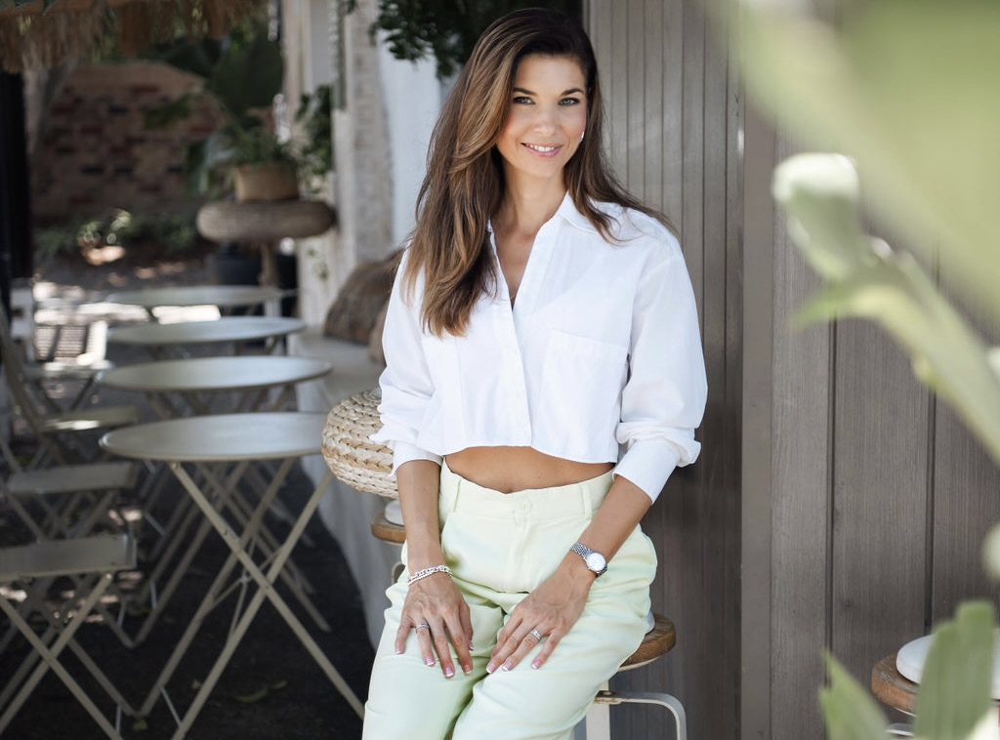

Služby

Úvodní konzultace
Komplexní nutriční analýza
Individuální, detailní rozbor vašich stravovacích návyků,
životního stylu a cílů. Tato konzultace je navržena tak, aby:
-
Zhodnotila váš aktuální jídelníček, suplementaci a stravovací
vzorce.
-
Odpověděla na vaše otázky ohledně výživy a udržitelných návyků.
- Vytvořila konkrétní kroky přizpůsobené vašim potřebám.
Co konzultace obsahuje:
-
Předkonzultační dotazník: Pomůže nám zaměřit se
na nejdůležitější oblasti během samotné konzultace.
-
Konzultace: Důkladné zhodnocení vašich návyků,
priorit a návrh specifických změn.
-
Podrobný závěrečný souhrn: Obdržíte klíčové
body a další kroky, které vám pomohou zůstat na správné cestě.
Cena:
1300,-Kč
(60 minut)
Individuální koučink
Exkluzivní 4týdenní program navržený tak, aby vám pomohl dosáhnout
vašich výživových cílů, vybudovat udržitelné návyky, zlepšit
mindset a vytvořit vyvážený životní styl — bez restrikcí.
Co program obsahuje:
-
Individuální jídelníček: Přizpůsobený vašemu
životnímu stylu, preferencím a cílům.
-
Pravidelný kontakt
přes WhatsApp nebo e-mail - motivace a vedení.
-
Týdenní check-in a zpětná vazba: která pomáhá
udržet směr a podporuje průběžný pokrok
-
Koučink intuitivního stravování: Naučíte se
vnímat signály hladu a sytosti, zbavíte se omezujícího
stravování a vybudujete zdravější vztah k jídlu.
-
Výživové vzdělávání: Praktické tipy pro
zdravější výběr potravin a stravování.
-
Podpora mindsetu a životního stylu: Budování
návyků pro rovnováhu v jídle, pohybu a životě.
Cena:
3900,-Kč (1. měsíc)
3000,- Kč (následující měsíce)
* Doporučeno absolvovat alespoň 3 měsíce
Balance Test (Domácí sada)
Rychlý domácí test z kapky krve, který ukáže poměr Omega-3 a Omega-6, úroveň zánětu a celkové zdraví buněk.
Proč je to důležité:
Většina lidí má dnes vysoký příjem Omega-6 a velmi nízký příjem Omega-3, což může ovlivňovat energii, hormony, zánět, stres, spánek i regeneraci.
Tento test poskytne konkrétní hodnoty, takže přesně víte, co vaše tělo potřebuje — žádné odhadování.
Test je doručen přímo domů.Jakmile jsou výsledky hotové, vše jednoduše a srozumitelně vysvětlím a dám jasné kroky, jak zlepšit zdraví.
Cena dle aktuální nabídky
Makro koučink
Ovládněte své stravování bez nutnosti striktního počítání! Naučíte
se, jak správně vyživovat tělo pro maximální energii, výkon a
celkovou pohodu. Tento individuální koučink vám pomůže vytvořit
flexibilní a dlouhodobě udržitelný přístup ke stravování.
* Doporučeno absolvovat po úvodní konzultaci.
Co konzultace obsahuje:
-
Makro koučink: Naučíte se správně vyvažovat
příjem bílkovin, tuků a sacharidů pro optimální energii a výkon.
-
Průvodce chytrým nákupem: Praktické tipy pro
nákupy v obchodech.
-
Nákupní seznam: Jednoduchý seznam pro zásobení
vaší kuchyně.
-
Pochopení potravinových skupin: Snadnější
rozhodování při výběru jídel.
Cena:
1900,-Kč
(60 minut)
Jednorázová následná konzultace
Ideální pro pokračování po úvodní konzultaci. Zaměřena na
zhodnocení pokroku, úpravu plánu a praktickou podporu pro udržení
motivace.
* Dostupné pouze po absolvování úvodní konzultace.
Co konzultace obsahuje:
-
Zhodnocení pokroku: Vyhodnocení účinnosti
aktuálního plánu a návrhy úprav.
-
Výživové vzdělávání: Praktické tipy pro
zdravější stravování.
-
Podpora mindsetu a životního stylu: Budování
udržitelných návyků v jídle i pohybu.
-
Koučink intuitivního stravování: Naučíte se
naslouchat signálům těla a vytvořit zdravější vztah k jídlu.
Cena:
700,-Kč
(60 minut)
Nejste si jistí, která služba je pro vás ta pravá?
Rezervujte si bezplatnou 10minutovou konzultaci nebo mi napište
zprávu!